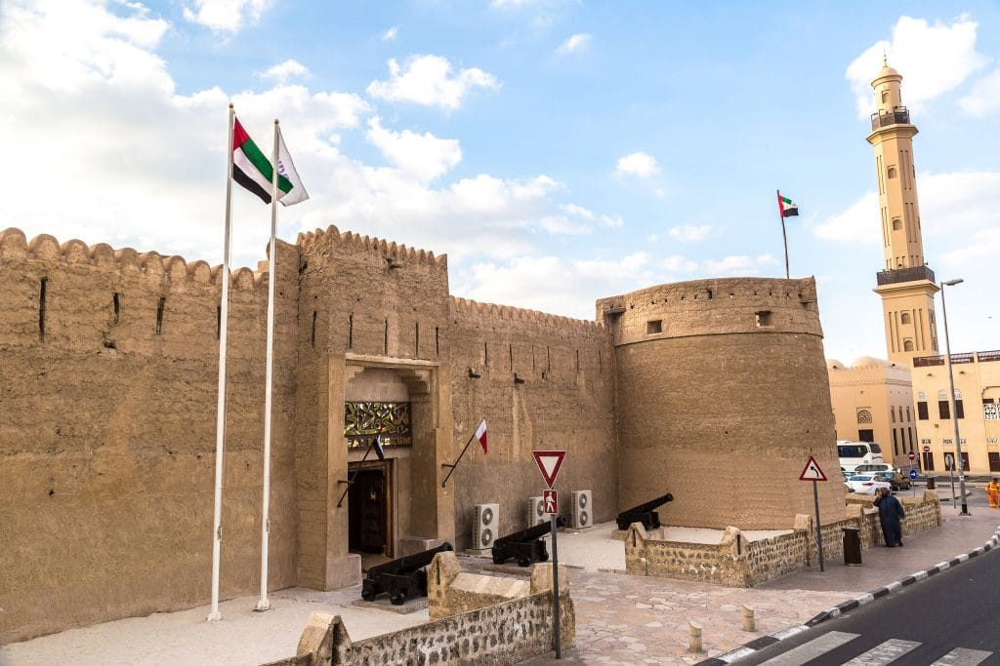

A história dos Emirados Árabes Unidos (EAU) é marcada por uma longa trajetória de mudanças sociais, políticas e econômicas. A unificação dos Emirados Árabes Unidos foi um evento significativo que levou à formação do país como o conhecemos hoje. Aqui está uma visão geral da história dos EAU, incluindo o processo de unificação:
Antecedentes: A região que agora compreende os Emirados Árabes Unidos possui uma rica história que remonta a milhares de anos. Ela foi habitada por várias tribos nômades e comunidades de pescadores ao longo dos séculos.
Período Pré-Unificação: Até o início do século 19, as tribos da região eram governadas por chefes tribais. A pesca, a agricultura e o comércio eram as principais atividades econômicas. Em meados do século 19, o Império Britânico começou a estabelecer acordos comerciais com as tribos costeiras.
Tratado de Proteção de 1892: Em 1892, o Reino Unido assinou o Tratado de Proteção com vários emirados costeiros, garantindo sua proteção contra ameaças externas em troca de controle sobre seus assuntos externos e relações internacionais.
Descoberta de Petróleo: A descoberta de petróleo nas décadas de 1950 e 1960 transformou a economia dos Emirados Árabes Unidos. A exploração de petróleo trouxe riqueza significativa para a região e levou ao desenvolvimento de infraestrutura e serviços.
Unificação dos Emirados Árabes Unidos: A unificação dos Emirados Árabes Unidos ocorreu em 1971 e foi um marco importante em sua história. Os seguintes eventos levaram à unificação:
Fim do Tratado de Proteção: Em 1968, o Reino Unido anunciou que não renovaria o Tratado de Proteção com os emirados costeiros, marcando o início do processo de independência. Fim da presença britânica: Em 1971, o Reino Unido anunciou sua intenção de retirar suas forças da região, levando à independência dos emirados costeiros. Formação dos Sete Emirados: Em 2 de dezembro de 1971, seis emirados (Abu Dhabi, Dubai, Sharjah, Umm Al-Quwain, Fujairah e Ajman) formaram uma união chamada de "Conselho de Cooperação dos Emirados Árabes" ou "Tratado de Constituição". Ras Al Khaimah juntou-se à união em 10 de fevereiro de 1972. Nomeação do Primeiro Presidente: Sheikh Zayed bin Sultan Al Nahyan, o então governante de Abu Dhabi, foi nomeado o primeiro presidente dos Emirados Árabes Unidos. Constituição e Desenvolvimento: A Constituição dos EAU foi promulgada em 1971, estabelecendo um sistema federal com poderes compartilhados entre os emirados e um governo federal em Abu Dhabi. Os EAU começaram a investir em infraestrutura, educação e saúde.
